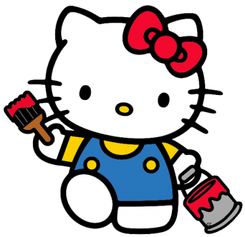

Meus sites WEB
(questão 22)
Calculando a duração de um jogo (horas e minutos), sabendo-se que o TEMPO MÁXIMO de duração do jogo é de 24 HORAS.
Quando o jogo iniciou?
Horas:
Minutos:
Quando o jogo terminou?
Horas:
Minutos:
Resultado: